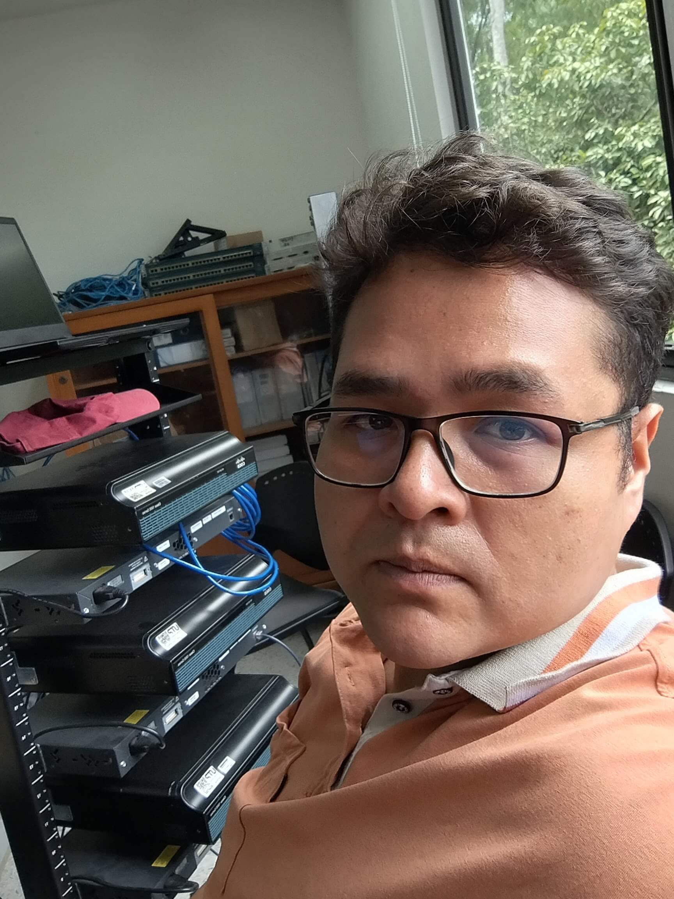

Juan Pablo González T
Ingeniero de Sistemas y Computación
Desarrollador fullstack apasionado por crear soluciones digitales efectivas. Con experiencia en desarrollo web, bases de datos y administracion de sistemas de informacion.
Contáctame